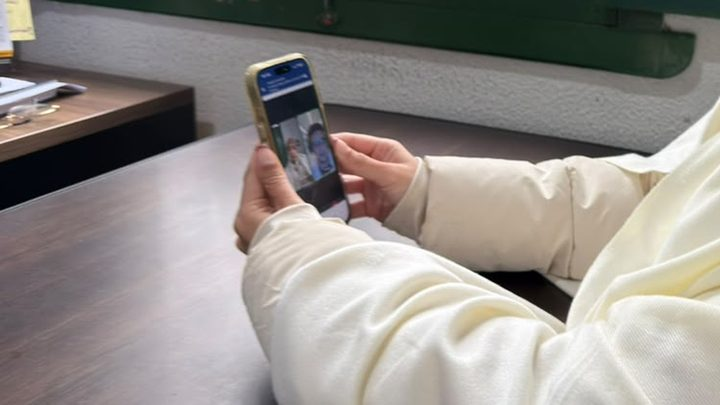
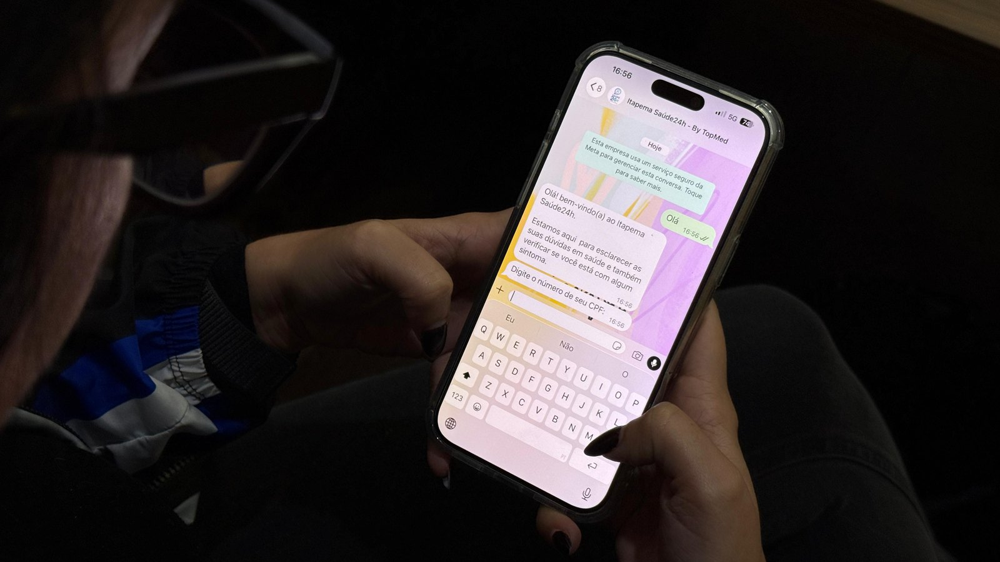
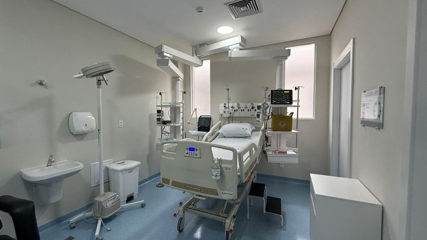
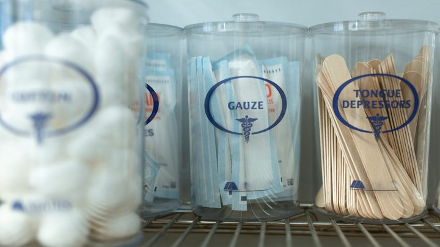

Itapema · SaúdeItapema abre o Saúde 24h, com médico por telefone e WhatsApp no 0800 333 7973
A matéria de agosto, com a lista de perguntas que esta responde em parte.
A Prefeitura divulgou nesta sexta-feira os primeiros números do serviço de telemedicina que anunciou em 26 de agosto. São 1.064 teletriagens no total e 792 só em setembro, o primeiro mês inteiro de funcionamento. Dividido pelos dias do mês, dá 26 atendimentos por dia. Em agosto nós perguntamos aqui quanto o serviço aguentava, e parte da resposta chegou agora.
Em 30 segundos · Modo de Leitura, formato original Santa Informa
Itapema abriu o Saúde 24h no fim de agosto.
É médico por telefone e por WhatsApp, no 0800 333 7973.
Funciona todo dia, 24 horas, de graça.
Agora saíram os primeiros números.
São 1.064 teletriagens desde o começo.
Dessas, 792 foram em setembro.
Setembro é o primeiro mês completo do serviço.
Nós dividimos 792 pelos 30 dias.
Dá 26 atendimentos por dia.
Do anúncio até esta sexta são 38 dias.
A média do período todo é de 28 por dia.
Sobram 272 atendimentos fora de setembro.
A Prefeitura não diz quanto é de agosto e quanto é de outubro.
As queixas mais comuns são resfriado e gastroenterite.
Também infecção respiratória e dor de cabeça.
A Prefeitura diz que mais de 91% se resolveram no telefone.
Esse 91% não é sobre os 1.064.
É sobre os atendimentos "com desfecho registrado".
Quantos são esses, a nota não informa.
Renovação de receita entrou na lista de usos.
Essa era uma das perguntas que ficaram em agosto.
Quem assina agora é a secretária interina.
Marines Kepler Nunes, no lugar de Fabrício Lazzari.
O valor e o prazo do contrato seguem sem divulgação.
O aplicativo próprio também não tem data.
1.064 atendimentos em 88.842 moradores.
Dá um para cada 84 pessoas, conta nossa.
Poder PúblicoPublicada em Redação Santa Informa

A Prefeitura de Itapema divulgou nesta sexta-feira os primeiros números do Saúde 24h, o atendimento médico por telemedicina que ela anunciou em 26 de agosto. São 1.064 teletriagens desde o começo, sendo 792 só em setembro, que foi o primeiro mês inteiro de funcionamento. O serviço atende todos os dias, inclusive fim de semana e feriado, pelo 0800 333 7973, por ligação ou por WhatsApp, e é gratuito.
Os 792 de setembro divididos pelos 30 dias do mês dão 26,4 atendimentos por dia. Do anúncio, em 26 de agosto, até esta sexta-feira são 38 dias, e aí a média do período inteiro sobe um pouco, para 28 por dia. As duas divisões são nossas: a nota da Prefeitura publica os totais e para por aí. Sobram 272 atendimentos fora de setembro, repartidos entre os últimos dias de agosto e os dois primeiros de outubro, e a nota não abre essa divisão. Comparado com a cidade, 1.064 atendimentos em 88.842 moradores, que é a estimativa do IBGE para 2026, dá um atendimento para cada 84 pessoas.
Quando o serviço abriu, nós fechamos a matéria com uma lista do que a Prefeitura não tinha dito. Duas coisas dessa lista voltaram agora. A primeira é a demanda: não é a capacidade por dia que perguntamos, mas pela primeira vez dá para saber quanta gente usa. A segunda é a receita. A nota desta sexta inclui renovação de receitas entre as situações indicadas para o serviço, junto com sintoma de gripe, dor de cabeça, desconforto gastrointestinal e dúvida sobre medicamento. As queixas mais comuns, diz a Prefeitura, são resfriado, gastroenterite, infecção respiratória e cefaleia. Quem assina os números agora é Marines Kepler Nunes, secretária interina de Saúde, no lugar de Fabrício Lazzari, que era quem falava em agosto.
O resumo de 30 segundos está no topo e a versão completa é o texto acima. Aqui ficam as três leituras da casa sobre o mesmo assunto.
Clara, a otimista
Mil e sessenta e quatro vezes alguém em Itapema teve dúvida de saúde e achou alguém do outro lado. De madrugada, no domingo, no feriado. Antes dessa linha, a resposta para a mesma dúvida era se arrumar e ir até a emergência, ou ficar em casa torcendo para passar.
E repare no tipo de queixa: resfriado, dor de cabeça, barriga ruim. É exatamente o caso que entope a porta do pronto atendimento e faz quem está passando mal de verdade esperar. Cada um desses 792 de setembro pode ser uma cadeira livre na sala de espera.
Seu Prudêncio, o criterioso
Merece atenção o jeito como o número de 91% foi apresentado. A base dele não são os 1.064 atendimentos, e sim os que têm desfecho registrado, que a nota não quantifica. Pode ser quase tudo, pode ser metade. São duas realidades bem diferentes para avaliar um serviço, e o leitor não tem como saber em qual está. Uma sugestão útil: publicar o denominador junto com o percentual resolve isso numa linha.
Vale acompanhar também o contrato. Já se passou mais de um mês e ainda não foi divulgado quanto Itapema paga pelo Saúde 24h, por quanto tempo, nem qual é o teto de atendimentos contratado. Com 26 por dia em setembro e a temporada chegando, saber onde fica esse teto deixa de ser curiosidade e vira planejamento.
Dito isso, reconheço o que foi bem feito, e não é pouco. A Prefeitura voltou ao assunto com número em mão pouco mais de um mês depois de anunciar, coisa que raramente acontece. Separou o mês completo do total, citou as queixas mais frequentes e teve o cuidado de dizer que o percentual vale para os casos com desfecho registrado, em vez de arredondar para cima. Quem faz essa ressalva está contando certo.
Caco, o sarcástico
Mil e sessenta e quatro ligações em 38 dias. Tem gente que liga para o 0800 por dor de cabeça e descobre que o remédio é parar de olhar o grupo da família. Serviço público resolvendo o que a tecnologia causou, por telefone, de graça.
A nota diz que mais de 91% se resolvem sem sair de casa. Entre os com desfecho registrado. Ou seja: deu certo em quase todos aqueles em que a gente anotou se deu certo. Confesso que gostei da honestidade, só queria saber de quantos estamos falando.
Agora o lado bom, e tem bastante. Um número de telefone que atende às três da manhã, no feriado, sem fila e sem custo, é das poucas coisas que a cidade ganhou e que funciona igual para quem mora no Centro e para quem mora no Sertão do Trombudo. Reclamar do denominador é luxo de quem já tem a linha tocando.
Fontes: os números de atendimento estão na nota Saúde 24h supera mil atendimentos em pouco mais de um mês em Itapema, publicada pela Imprensa PMI em 2 de outubro de 2026, que traz as 1.064 teletriagens, as 792 de setembro como primeiro mês completo, o funcionamento diário pelo 0800 333 7973 por ligação e WhatsApp, as queixas mais comuns, a passagem de pacientes encaminhados pela rede municipal, o percentual de mais de 91% entre os atendimentos com desfecho registrado, a lista de situações indicadas com renovação de receitas e a declaração da secretária interina de Saúde, Marines Kepler Nunes. O anúncio do serviço, a aquisição pelo CIS-AMFRI, o atendimento pela TopMed e a promessa do aplicativo próprio estão na nossa matéria Itapema abre o Saúde 24h, com médico por telefone e WhatsApp no 0800 333 7973, de 26 de agosto de 2026. A população estimada de 88.842 moradores é a projeção do IBGE para 2026, na tabela 6579 do Sidra, e está no nosso Raio-X da Região. As divisões por dia e por morador são contas nossas sobre esses números.

Itapema · SaúdeA matéria de agosto, com a lista de perguntas que esta responde em parte.

Itapema · SaúdeA outra ponta da rede, anunciada no mesmo dia do Saúde 24h.

Itapema · SaúdeO mesmo consórcio que comprou o Saúde 24h, comprando outra coisa.